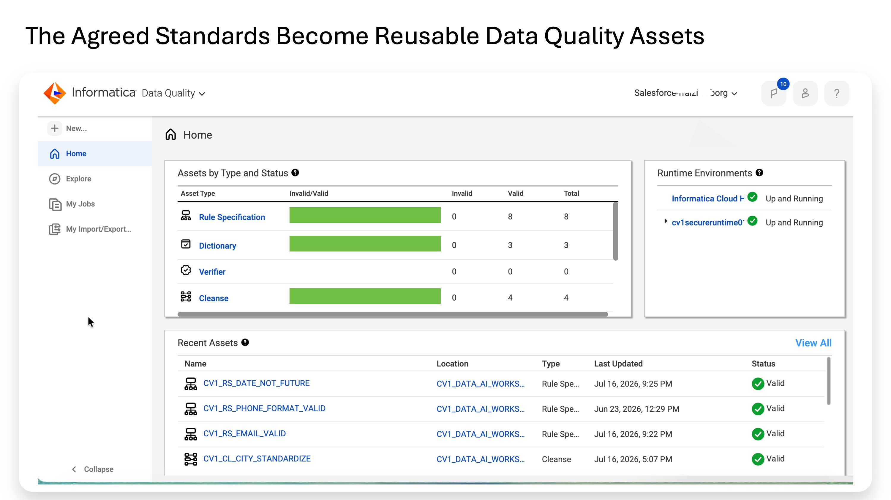
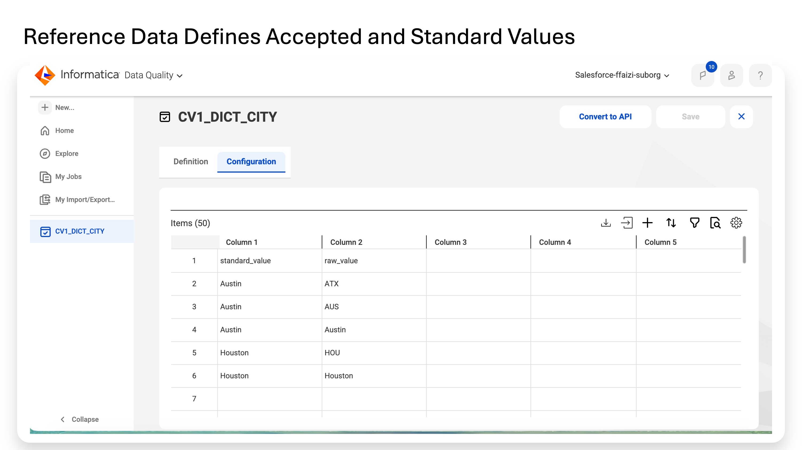
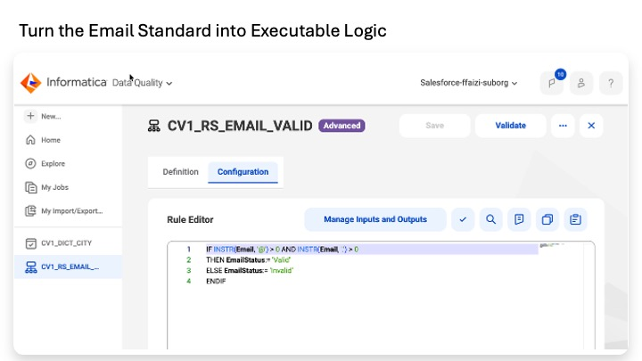
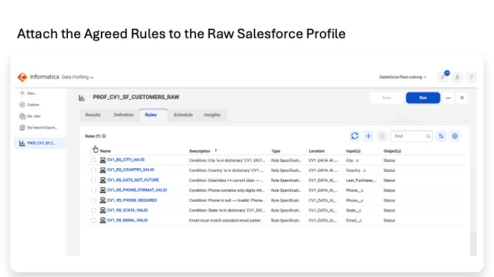
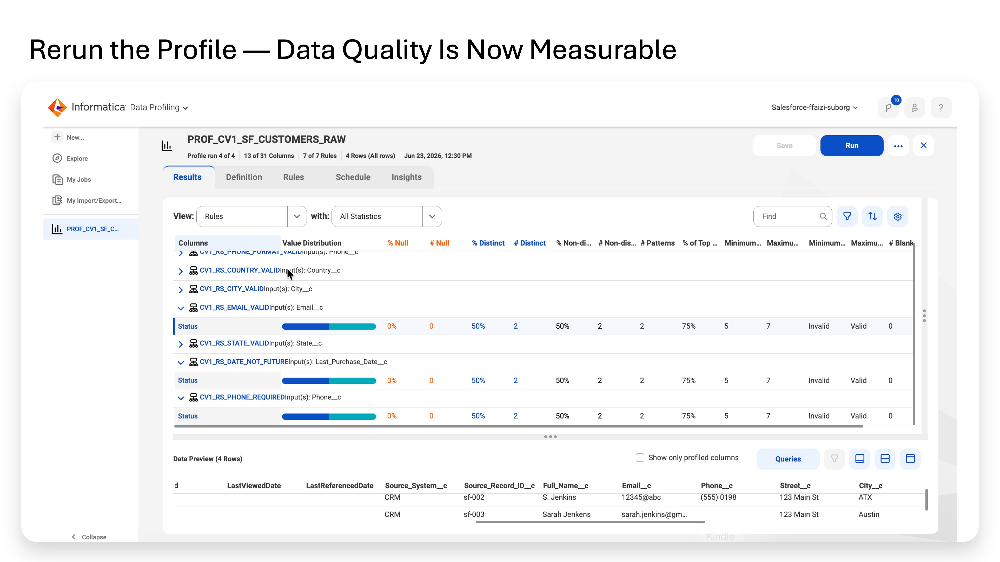

Lab 4A
Turn the agreed data-quality standards into reusable Informatica rules and measure the source data against them. The output is a scorecard: pass/fail counts and percentages for each attached rule.
Reference dictionaries + Rule Specifications | v Profile task | v Scorecard how many rows pass / fail each rule
This lab does not fix source data: it creates a measured baseline. Standardization happens in Lab 4B.
• 3 Dictionaries: state, country, city.
• 8 Rule Specifications: reusable validation checks.
• A Salesforce profile run with 7 relevant rules attached.
• Optional Databricks transaction profile run with amount/date rules.
• The agreed rule inventory from Lab 3 is understood.
• The Salesforce profile task PROF_CV1_SF_CUSTOMERS_RAW exists.
• The Secure Agent runtime and source connections work.
The city, state, and country rules need a shared reference list of recognized values. The same dictionaries are later reused by the Cleanse assets to replace variants with standard values.
1. Service selector → Data Quality.
2. Explore → open CV1_DATA_AI_WORKSHOP.
3. New → Dictionary.
4. Name = CV1_DICT_STATE. Location = CV1_DATA_AI_WORKSHOP. Save.
5. Open the empty dictionary grid → Import.
6. Select cv1_dict_state.csv.
7. Delimiter = Comma. Select Import from first line.
8. Import.
9. Verify standard_value / raw_value rows such as TX / Texas, TX / TX, TX / Tex, ON / Ontario.
10. Save.
11. New → Dictionary → Name = CV1_DICT_COUNTRY.
12. Import cv1_dict_country.csv with the same settings.
13. Verify examples such as US / United States, US / USA, US / U.S., US / US, CA / Canada.
14. Save.
15. New → Dictionary → Name = CV1_DICT_CITY.
16. Import cv1_dict_city.csv.
17. Verify examples such as Austin / ATX, Austin / AUS, Austin / Austin, Houston / HOU, Houston / Houston.
18. Save.
End-state for Part A: CV1_DICT_STATE, CV1_DICT_COUNTRY, and CV1_DICT_CITY exist in CV1_DATA_AI_WORKSHOP.
A Rule Specification reads an input value and writes an output verdict. It does not alter the input. We use Advanced mode because the confirmed workshop expressions require functions/operators that are not available in the required form in Basic mode.
19. Definition → enter the rule name and Dimension → Save.
20. Configuration → immediately click Convert to Advanced.
21. Manage Inputs and Outputs → add the required Input and Output.
22. Enter the IF / THEN / ELSE logic.
23. Click Validate.
24. Save.
| Dimension | Meaning in this workshop |
|---|---|
| Validity | Does the value meet the required structural/business condition? |
| Completeness | Is the required value present? |
| Consistency | Is the representation recognized/consistent with the agreed standard? |
| Timeliness | Is the date/time acceptable relative to the current time? |
Input: Email (String, 80) | Output: EmailStatus (String, 10) | Dimension: Validity
IF INSTR(Email, '@') > 0 AND INSTR(Email, '.') > 0 THEN EmailStatus := 'Valid' ELSE EmailStatus := 'Invalid' ENDIF
Workshop check: the value must contain both @ and a dot. It is intentionally a simple structural rule rather than full RFC email validation.
Input: Phone (String, 40) | Output: Status (String, 10) | Dimension: Completeness
IF IsNull(Phone) THEN Status := 'Invalid' ELSE Status := 'Valid' ENDIF
Input: Phone (String, 40) | Output: Status (String, 10) | Dimension: Consistency
IF INSTR(Phone, '-') = 0 AND INSTR(Phone, '(') = 0
AND INSTR(Phone, ')') = 0 AND INSTR(Phone, '+') = 0
AND INSTR(Phone, ' ') = 0
THEN Status := 'Valid'
ELSE Status := 'Invalid'
ENDIF
This rule rejects the formatting characters present in the workshop phone data. Lab 4B produces the standardized digits-only representation.
Input: City (String, 60) | Output: Status (String, 10) | Dimension: Consistency
IF City in dictionary:CV1_DATA_AI_WORKSHOP.CV1_DICT_CITY THEN Status := 'Valid' ELSE Status := 'Invalid' ENDIF
This answers whether the value is recognized anywhere in the city reference dictionary. A recognized alias such as ATX can pass even though Lab 4B will still standardize it to Austin.
Input: State (String, 60) | Output: Status (String, 10) | Dimension: Consistency
IF State in dictionary:CV1_DATA_AI_WORKSHOP.CV1_DICT_STATE THEN Status := 'Valid' ELSE Status := 'Invalid' ENDIF
Input: Country (String, 60) | Output: Status (String, 10) | Dimension: Consistency
IF Country in dictionary:CV1_DATA_AI_WORKSHOP.CV1_DICT_COUNTRY THEN Status := 'Valid' ELSE Status := 'Invalid' ENDIF
Input: DateValue (Date/Time, precision 29, scale 9) | Output: DateStatus (String, 10) | Dimension: Timeliness
IF DateValue <= Systimestamp() THEN DateStatus := 'Valid' ELSE DateStatus := 'Invalid' ENDIF
Input: Amount (Float) | Output: Status (String, 10) | Dimension: Validity
IF Amount >= 0 THEN Status := 'Valid' ELSE Status := 'Invalid' ENDIF
The Rule Specifications are saved definitions until something executes them. Attaching them to the profile means every Salesforce row is evaluated when the profile runs, and the results become measurable pass/fail counts.
25. Service selector → Data Profiling.
26. Open PROF_CV1_SF_CUSTOMERS_RAW.
27. Open the Rules tab.
| Rule Specification | Source column |
|---|---|
| CV1_RS_EMAIL_VALID | Email__c |
| CV1_RS_PHONE_REQUIRED | Phone__c |
| CV1_RS_PHONE_FORMAT_VALID | Phone__c |
| CV1_RS_CITY_VALID | City__c |
| CV1_RS_STATE_VALID | State__c |
| CV1_RS_COUNTRY_VALID | Country__c |
| CV1_RS_DATE_NOT_FUTURE | Last_Purchase_Date__c |
28. Click + / Add Rule.
29. Select the Rule Specification.
30. Select the source column shown in the table.
31. Repeat until all seven rules are attached.
32. Save the profile task.
33. Confirm the Schedule tab still uses the working Secure Agent runtime.
34. Run the profile.
35. Open Results after completion.
| Rule | Dimension | Expected tested result | Reason |
|---|---|---|---|
| CV1_RS_EMAIL_VALID | Validity | 75% (3/4) | sf-002 fails. |
| CV1_RS_PHONE_REQUIRED | Completeness | 75% (3/4) | sf-003 is null. |
| CV1_RS_PHONE_FORMAT_VALID | Consistency | ~50% in the tested run | Workshop raw formatting causes failures. |
| CV1_RS_CITY_VALID | Consistency | 100% | Dictionary recognizes standards and variants. |
| CV1_RS_STATE_VALID | Consistency | 100% | Dictionary recognizes standards and variants. |
| CV1_RS_COUNTRY_VALID | Consistency | 100% | Dictionary recognizes standards and variants. |
| CV1_RS_DATE_NOT_FUTURE | Timeliness | 75% (3/4) | sf-001 is future dated. |
This is the measured baseline: the profile ran the rules against the actual rows. The percentages are no longer observations made by eye.
Open PROF_CV1_DBX_TRANSACTIONS_RAW and attach:
• CV1_RS_AMOUNT_NON_NEGATIVE → amount.
• CV1_RS_DATE_NOT_FUTURE → transaction_ts.
Run. Expected: Amount 80% pass (4/5); Date 80% pass (4/5). This optional run is not required for Lab 4B to execute.

The Data Quality workspace now contains reusable Rule Specifications, Dictionaries and Cleanse assets. Instead of embedding quality logic independently in every pipeline, the workshop creates named assets that can be reused and governed across profiling and integration.

The city dictionary captures both the value seen in the source and the value the business wants to use consistently. For example, ATX, AUS and Austin all map to the standard value Austin, while HOU maps to Houston.

The CV1_RS_EMAIL_VALID Rule Specification implements the agreed email test and returns an explicit Valid or Invalid result. This is the point where a business decision from Lab 3 becomes repeatable logic that Informatica can execute.

Seven Rule Specifications are now attached to the same Salesforce profile used during discovery. The rules cover city, country, date, phone, state and email, turning the original profile from a purely observational exercise into a repeatable quality assessment.

The profile is rerun with the agreed rules attached. Each rule evaluates the records and returns a Valid or Invalid status, turning the issues discovered in Lab 2 into explicit, repeatable quality results. The screen shows rule-output distributions; it should not be described as a labelled 75% pass / 25% fail result unless the UI explicitly shows that breakdown.
• Three dictionaries exist.
• Eight Rule Specifications exist and validate in Advanced mode.
• The Salesforce profile has seven rules attached and has been re-run.
• Results show rule-level pass/fail counts and percentages.
• The earlier no-rule profile run remains available for comparison.
• No source data was modified.
We converted business expectations into executable validation definitions and produced a numerical baseline for source-data quality.
Lab 2: observe Lab 3: agree standards Lab 4A: measure pass/fail | v Lab 4B: standardize data and route failures
Lab 4B builds the Cleanse assets and CDI mappings that apply the agreed standards to records. Selected values are standardized, rules are re-applied, valid rows go to staging tables, and failures go to exception tables.
| Need | Working syntax | Not used / did not work in testing |
|---|---|---|
| Substring search | INSTR(field, 'substr') > 0 | Contains(field, 'substr') |
| Substring absent | INSTR(field, 'substr') = 0 | NOT Contains(...) |
| Null check | IsNull(field) | |
| Current date/time | Systimestamp() | CurrentDate(), Today() |
| Dictionary lookup | field in dictionary:Project.Name | IN DICTIONARY, InDictionary() |
| Assignment | Status := 'Valid' | Status = 'Valid' |
| Regex/pattern | Not available in the required tested form; workshop uses INSTR checks | MatchesRegEx(), Matches() |
To delete and recreate a bad Rule Specification: Explore → locate the asset → three-dot menu → Delete.
Trusted Data Foundation Workshop